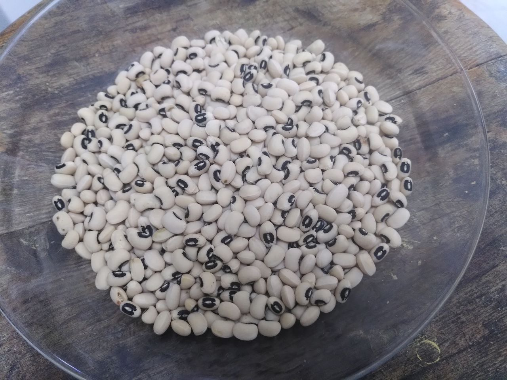

{on hold} ds4clj: a data science course for Clojure devs

- Following broad support on Clojureverse and Reddit conversations and elsewhere, we have been planning a data-science course for Clojure devs during 2023.
For various reasons of community priorities, this project was delayed. As of May 2024, we are reconsidering a revised version, which is probably a semi-structured series of talks alongside the more hands-on real-world-data group.
The content below is the old 2022-2023 draft.
exploration meetings preparing for the course
- 2022-07-24, initial brainstorming - event
- 2022-08-06, prep meeting about R & Tidyverse - event
- 2022-09-10, NLP study session 1 - summary & video
- 2022-10-30, NLP study session 2: Predict real vs. fake disaster tweets with DVC, Clojure and Python - summary & video
- 2022-11-05, an intro to table processing with Tablecloth - a session of the data-recur group - summary & video
goals
- provide Clojure devs with basic theory, practices, and tools for common data science tasks;
- also welcome open-minded people who are new to Clojure;
- create learning resources for future use;
- encourage Clojurians to become active contributors to the emerging stack.
requirements
- at least one of the following:
- basic knowlede of Clojure
- a very open mind towards new programming languages
- being ready to put a few hours a week into learning and practice, for a few months
chat
- We’ll use a dedicated stream at the Clojurians Zulip chat.
- Stream: ds4clj
- It is recommended to follow a few of the other chat streams.
time
- We’ll have a class once a month.
- We may have practice meetings in between.
- Each class is 3 hours, containing a lecture, a short break, and then discussion and Q&A.
recording
- The meetings will be recorded and shared at the Clojurians Zulip chat.
- Some parts of the recordings (e.g. the lecture) will be shared publicly.
homework
Homework will be composed of:
- exercises on class topics
- personal projects (as individuals or in small groups) – for example:
- exploring datasets
- reproducing previously publushed research
- contributing to the stack of relevant libraries
- contributing to documentation
recommended resources
📖 [Clj4BT] Clojure for the Brave and True by Daniel Higginbotham
This is a great intro to Clojure.
It is useful for those who need a refresh with the language, or are new to it.
Note: Chapter 2 suggests a specific development environment using Emacs (and is also a bit outdated). Emacs is wonderful, but it is not required for learning Clojure. Please reach out for help you wish to learn the book with another environment.
📖 [R4DS] R for Data Science by Wickham and Grolemund
This is a good intro to the R language and its use in basic data-science tasks. It uses the Tidyverse collection of R packages and the so-called “tidy” approach, which is common in today’s R community.
We will use parts of it a basic intro to R. Knowing some R would make participants more independent in approaching study resources on their own. Python could have been another option, but we prefer R, since its ecosystem is arguably more in harmony with the functional approach and with expressing statistical ideas.
📖 [Clj4DS] [Clojure for Data Science](https://www.packtpub.com/product/clojure-for-data-science/9781784397180** by Henry Garner
This is an excellent intro to data science topics, but it uses Clojure libraries which are not actively developed anymore.
It will be used for a few of the case studies, that we will adapt to this course.
list of topics (tentative)
language
(mostly self learning)
- Clojure
- R
from today’s brainstorming:
theory & methods
(very basic intros)
- hello world: a typical workflow
- reshaping data (the “tidy” notion)
- correctness: testing, reproducibility
- descriptive statistics
- frequentist statistical inference
- supervised learning: principles & workflow, regression, classification
- working with tree-structured data
- probabilistic modelling through Bayesian statistics
- unsuprevised learning: clustering, dimension reduction
- linear algebra
- deep networks
- nlp
- async data streams
- graph data
libraries & tools
(some introduced briefly, some more thoroughly)
- tables: tablecloth, tech.ml.dataset
- arrays: dtype-next
- transducers: xforms, injest
- correctness (schemas): malli
- data vis & notebook tooling: portal, oz, clerk, clay
- data vis grammars: hanami, cljplot?
- math stats: fastmath, kixi.stats
- machine learning algorithms & pipelines: scicloj.ml
- interoperation w/ other languages: libpython-clj, clojisr
- Bayesian statistics: inferme, clj-stan
- tree data: clojure.walk, core.match, specter, meander, tupelo
- data ingestion: jdbc-next?, some web scraping, arrow?
- linear algebra, deep learning: neanderthal, deep-diamond
- parallel computing: geni, clojask
- nlp: datalinguist?, spacy through interop
- graph data: loom, asami, neo4j?
course plan (very tentative)
| month | topic | libraries | homework |
|---|---|---|---|
| core topics | |||
| 1 | common workflow | tablecloth, fastmath, hanami, | learn some R and Clojure |
| scicloj.ml | |||
| 2 | descriptive stats, | fastmath, kixi.stats | apply to a real-world dataset |
| frequentist stats | |||
| 3 | data visualization | hanami, cljplot? | apply to a real-world dataset |
| 4 | arrays & tables | dtype-next, tech.ml.dataset, | apply to a real-world dataset, |
| tablecloth | run some speed comparisons | ||
| 5 | basic supervised learning workflow, | scicloj.ml, malli | reproduce some kaggle notebooks |
| reproducibility, tests | |||
| 6 | probability, Bayesian stats | inferme, clj-stan | reading in Statistical Rethinking, |
| reproducing some examples | |||
| 7 | advanced supervised learning workflows | scicloj.ml | reproduce some kaggle notebooks, |
| explore variations & improvements | |||
| 8 | unsupervised learning | fastmath, scicloj.ml | reproduce some kaggle notebooks, |
| explore variations & improvements | |||
| 9 | python and R interop | libpython-clj, clojisr | go through some tutorials by |
| interop | |||
| specialized topics | |||
| 10 | working with tree-sructured data, | clojure.walk, specter, meander, | scrape & analyse some |
| web scraping | hickory | unstructured data | |
| 11 | linear algebra, basic image processing | neanderthal | process some images |
| 12 | deep learning | deep diamond | reproduce some tutorials |
| 13 | async data streams | xforms, kixi.stats | analyse some user events |
| 14 | natural language processing | datalinguist, | analyse some texts, |
| spaCy through interop | write rules to capture intents | ||
| 15 | graph data | loom, asami, neo4j? | analyse some graph data |
| 16 | big datasets | geni, clojask, tech.ml.dataset | query and analyse a big dataset, |
| run some speed comparisons | |||